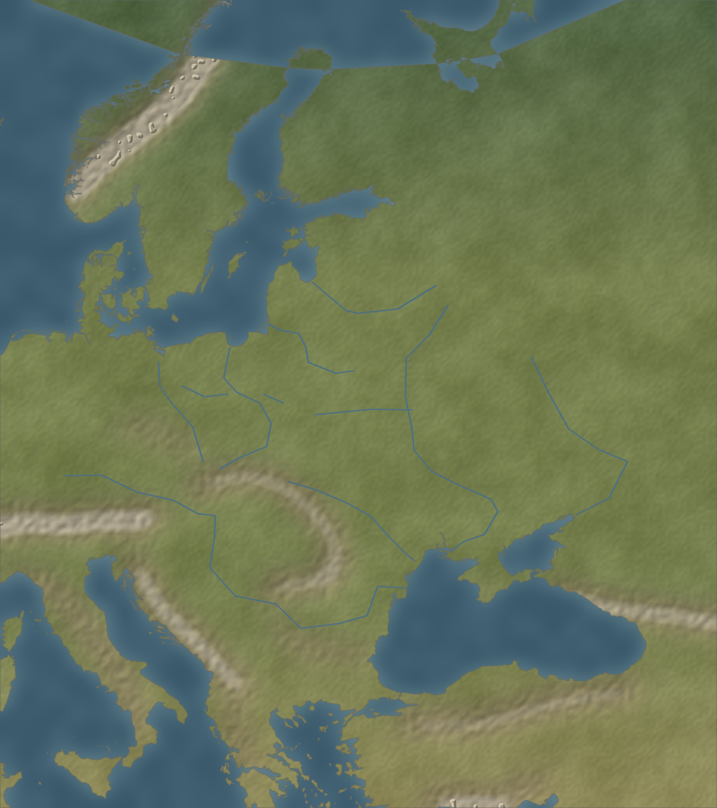

<!doctype html>
<html><head><meta charset="utf-8">
<link rel="stylesheet" href="node_modules/@fontsource/cinzel/700.css">
<link rel="stylesheet" href="node_modules/@fontsource/cinzel/900.css">
<link rel="stylesheet" href="node_modules/@fontsource/anton/index.css">
<link rel="stylesheet" href="node_modules/@fontsource/eb-garamond/500.css">
<link rel="stylesheet" href="node_modules/@fontsource/eb-garamond/700.css">
<link rel="stylesheet" href="node_modules/@fontsource/eb-garamond/500-italic.css">
<link rel="stylesheet" href="node_modules/@fontsource/old-standard-tt/700.css">
<link rel="stylesheet" href="node_modules/@fontsource/inter/600.css">
<script src="geodata.js"></script>
<style>
*{box-sizing:border-box;margin:0;padding:0}
html,body{width:1080px;height:1920px;overflow:hidden;background:#000}
#stage{position:absolute;left:0;top:0;width:1080px;height:1920px;overflow:hidden;background:#3e5e70}
.el{position:absolute;left:0;top:0;transform-origin:50% 50%;display:none}
#mapsvg{position:absolute;left:0;top:0}
.lbl{font-family:Cinzel;font-weight:700;fill:#f6efdc;stroke:rgba(20,10,5,.55);stroke-width:7px;paint-order:stroke;letter-spacing:.18em}
/* overlays */
.cap{align-items:center;justify-content:center;color:#fff;font:500 50px/1.28 'EB Garamond';text-align:center;text-shadow:0 2px 10px rgba(0,0,0,.95),0 0 30px rgba(0,0,0,.7)}
.cap b{color:#ffd77a;font-weight:700}
#capbg{position:absolute;left:0;right:0;bottom:0;height:760px;background:linear-gradient(transparent,rgba(5,4,3,.55) 35%,rgba(5,4,3,.82));pointer-events:none;z-index:40}
#topbg{position:absolute;left:0;right:0;top:0;height:360px;background:linear-gradient(rgba(5,4,3,.55),transparent);z-index:40}
.year{display:flex;align-items:center;justify-content:center;font:900 72px/1 Cinzel;color:#2c1d10;letter-spacing:4px;
 background:radial-gradient(120% 140% at 50% 50%,#f1e2bd,#d9c08b 70%,#b89a5f);border-radius:10px;box-shadow:0 10px 30px rgba(0,0,0,.6),inset 0 0 0 4px #8d6a32,inset 0 0 0 9px #f1e2bd,inset 0 0 0 11px #8d6a32}
.chap{text-align:center;color:#fff}
.chap .k{font:700 38px Cinzel;letter-spacing:12px;color:#e9c46a}
.chap .t{font:900 92px/1.08 Cinzel;letter-spacing:3px;margin-top:22px;text-shadow:0 6px 30px rgba(0,0,0,.8)}
.chap .r{width:420px;height:3px;margin:28px auto 0;background:linear-gradient(90deg,transparent,#e9c46a,transparent)}
.dim{background:rgba(6,4,3,.62)}
.banner{filter:drop-shadow(0 18px 18px rgba(0,0,0,.55))}
.banner .rod{position:absolute;left:-14px;right:-14px;top:0;height:16px;border-radius:8px;background:linear-gradient(#e6c776,#8a6524)}
.banner .rod:before,.banner .rod:after{content:'';position:absolute;top:-9px;width:30px;height:30px;border-radius:50%;background:radial-gradient(circle at 35% 35%,#ffe9a8,#8a6524)}
.banner .rod:before{left:-18px}.banner .rod:after{right:-18px}
.banner .cloth{position:absolute;left:0;right:0;top:12px;bottom:0;background:linear-gradient(90deg,#5e0d16,#9b1c2a 30%,#8a1522 70%,#4d0a12);clip-path:polygon(0 0,100% 0,100% 100%,50% 88%,0 100%);padding:18px 16px 0}
.banner .pic{width:100%;height:58%;overflow:hidden;border:5px solid #d8b665;background:#1d120b}
.banner .pic img{width:100%;height:100%;object-fit:cover;filter:sepia(.25) contrast(1.05)}
.banner .nm{margin-top:12px;color:#f6e7c1;font:700 26px/1.12 Cinzel;text-align:center;letter-spacing:1px}
.banner .em{width:100%;height:58%;border:5px solid #d8b665;display:flex;align-items:center;justify-content:center;background:radial-gradient(#b8293a,#6d1019)}
.badge{border-radius:50%;background:#f7f3ea;box-shadow:0 10px 24px rgba(0,0,0,.55);display:flex;align-items:center;justify-content:center}
.tag{align-items:center;justify-content:center;background:#1b1612;color:#fff;font:600 58px/1 Inter;padding:0 20px;border:2px solid #cdb88a;white-space:nowrap;box-shadow:0 8px 20px rgba(0,0,0,.5)}
.paint{overflow:hidden;background:#000}
.paint .bg{position:absolute;inset:-60px;background-size:cover;background-position:center;filter:blur(30px) brightness(.45)}
.paint img.fg{position:absolute;left:50%;top:50%;transform:translate(-50%,-50%) scale(var(--kz,1));max-width:96%;max-height:62%;box-shadow:0 20px 70px rgba(0,0,0,.8);border:10px solid #e8dcc0}
.doc{background:radial-gradient(120% 100% at 50% 40%,#f4e8c8,#dcc492 75%,#c2a46a);color:#2b1d10;padding:60px 64px;box-shadow:0 30px 80px rgba(0,0,0,.7)}
.doc h3{font:900 52px/1.1 Cinzel;text-align:center;border-bottom:3px double #6b4a22;padding-bottom:18px;margin-bottom:26px}
.doc li{font:500 40px/1.3 'EB Garamond';margin:0 0 18px 34px}
.big{font:110px/1 Anton;color:#fff;text-align:center;letter-spacing:3px;text-shadow:0 8px 40px rgba(0,0,0,.9)}
.bar{height:74px;border-radius:6px;box-shadow:0 8px 20px rgba(0,0,0,.4)}
.barl{font:600 34px Inter;color:#fff;text-shadow:0 2px 8px #000}
.bul{align-items:center;color:#fff;font:700 54px/1.12 'EB Garamond';display:flex;gap:26px;align-items:center;text-shadow:0 3px 14px #000}
.bul span{flex:none;width:86px;height:86px;border-radius:50%;background:#a3263f;border:4px solid #e9c46a;display:flex;align-items:center;justify-content:center;font:900 46px Cinzel;color:#fff}
#vig{position:absolute;inset:0;background:radial-gradient(130% 90% at 50% 45%,transparent 55%,rgba(0,0,0,.55));z-index:45;pointer-events:none}
</style></head><body>
<div id="stage"><div id="capbg"></div><div id="topbg"></div><div id="vig"></div></div>
<script>
const G=window.GEO, PT=G.pts;
// ---------------- palette ----------------
const COL={crim:'#a3263f',lit:'#8b4a1f',teut:'#e4e0d6',hun:'#2f6f86',mus:'#c9a227',swe:'#3b4a6e',ott:'#2e6b3e',cri:'#6d9a52',pru:'#2a2a2e',aus:'#c9d0d8',sax:'#6a3d8f',coss:'#7a4fa3'};
const LAY={pol1385:'crim',lit1385:'lit',teut1400:'teut',hun1400:'hun',plc1600:'crim',mus1600:'mus',swe1600:'swe',ott1600:'ott',cri1600:'cri',
 plc1650:'crim',mus1650:'mus',swe1650:'swe',ott1650:'ott',hetman:'coss',zapo:'coss',andrus:'mus',
 plc1700:'crim',mus1700:'mus',swe1700:'swe',ott1700:'ott',aus1700:'aus',pru1700:'pru',sax1783:'sax',
 pol1783:'crim',rus1783:'mus',pru1783:'pru',aus1783:'aus',swe1783:'swe',ott1783:'ott',
 p1_ru:'mus',p1_pr:'pru',p1_au:'aus',pol1793:'crim',p2_ru:'mus',p2_pr:'pru',p3_ru:'mus',p3_pr:'pru',p3_au:'aus',
 rus1800:'mus',pru1800:'pru',aus1800:'aus',swe1800:'swe',ott1800:'ott'};
// ---------------- labels ----------------
const LBL={
 poland:['KINGDOM OF POLAND','pol_c',62,-6,40],lithuania:['GRAND DUCHY OF LITHUANIA','lit_c',58,-14,70],teutonic:['TEUTONIC ORDER','teut_c',38,-4,20],hungary:['HUNGARY','hungary_c',80,-4,30],
 plc:['POLISH–LITHUANIAN COMMONWEALTH','plc_center',64,-14,110],plcS:['COMMONWEALTH','plc_center',70,-10,40],poland2:['POLAND','pol_c',90,-6,30],
 muscovy:['RUSSIA','muscovy_lab',96,-8,40],sweden:['SWEDEN','swe_lab',84,-60,30],ottoman:['OTTOMAN EMPIRE','ott_lab',70,-4,40],crimea:['CRIMEAN KHANATE','crimea_lab',40,-4,10],
 cossack:['COSSACK HETMANATE','cossack_lab',44,-10,30],prussia:['PRUSSIA','prussia_lab',70,-6,20],austria:['AUSTRIA','austria_lab',70,-4,20],saxony:['SAXONY','saxony_lab',50,-8,10]};
// ---------------- arrows ----------------
const ARR={
 grun1:[['krakow','warsaw','grunwald'],COL.crim],grun2:[['vilnius','grodno','grunwald'],COL.lit],
 moscow:[['vilnius','smolensk','klushino','moscow'],COL.crim],
 pere:[['kyiv','chernihiv','smolensk2','moscow'],'#7a4fa3',1],
 rus54:[['moscow','smolensk','minsk','vilnius'],COL.mus],rus54b:[['moscow','chernihiv','kyiv','lviv'],COL.mus],
 swe1:[['stettin','poznan','warsaw'],'#5b6fa3'],swe2:[['warsaw','czestochowa','krakow'],'#5b6fa3'],swe3:[['riga','kokenhausen','vilnius'],'#5b6fa3'],
 ott83:[['istanbul','bucharest','budapest','vienna'],'#3f8f52'],sob:[['krakow','czestochowa','vienna'],COL.crim],
 sax:[['dresden','poznan','warsaw'],'#8a55b8'],
 gnwS:[['riga','vilnius','warsaw','krakow','lviv','poltava'],'#5b6fa3'],gnwR:[['moscow','smolensk','minsk','grodno','warsaw'],COL.mus],
 rus92a:[['kyiv','lublin','warsaw'],COL.mus],rus92b:[['smolensk','minsk','vilnius','warsaw'],COL.mus],
 kos:[['krakow','raclawice'],COL.crim]
};
// ---------------- element defs ----------------
const E={};
function img(f){return `assets/${f}`}
function banner(name,pic,em){return `<div class="rod"></div><div class="cloth">${pic?`<div class="pic"></div>`:`<div class="em">${em||crownSVG()}</div>`}<div class="nm">${name}</div></div>`}
function crownSVG(c='#f2d27a'){return `<svg viewBox="0 0 100 100" width="62%"><path d="M12 72 L8 30 L30 50 L50 18 L70 50 L92 30 L88 72Z" fill="${c}" stroke="#5a3a10" stroke-width="3"/><rect x="12" y="74" width="76" height="12" fill="${c}" stroke="#5a3a10" stroke-width="3"/><circle cx="50" cy="16" r="6" fill="#fff"/><circle cx="8" cy="28" r="5" fill="#fff"/><circle cx="92" cy="28" r="5" fill="#fff"/></svg>`}
function eagleSVG(c='#f4f1ea'){return `<svg viewBox="0 0 100 100" width="70%"><path fill="${c}" d="M50 14c5 0 8 4 8 8 0 3-2 5-3 6l8-4 4 6 9-9 2 8 8-3-3 9 6 3-7 5 4 6-9 1-6 9-6-2-4 9h-3l5 7-8 1-5 9-5-9-8-1 5-7h-3l-4-9-6 2-6-9-9-1 4-6-7-5 6-3-3-9 8 3 2-8 9 9 4-6 8 4c-1-1-3-3-3-6 0-4 3-8 8-8z"/><path d="M44 8l6-5 6 5-2 4h-8z" fill="#f2d27a"/></svg>`}
function icon(kind){const s={
 rings:`<svg viewBox="0 0 100 100" width="74%"><circle cx="40" cy="55" r="22" fill="none" stroke="#c9a227" stroke-width="9"/><circle cx="60" cy="48" r="22" fill="none" stroke="#e0bd4a" stroke-width="9"/></svg>`,
 swords:`<svg viewBox="0 0 100 100" width="74%"><g stroke="#2b2622" stroke-width="7" stroke-linecap="round"><line x1="20" y1="20" x2="80" y2="80"/><line x1="80" y1="20" x2="20" y2="80"/><line x1="64" y1="72" x2="74" y2="62" stroke-width="10"/><line x1="36" y1="72" x2="26" y2="62" stroke-width="10"/></g></svg>`,
 scroll:`<svg viewBox="0 0 100 100" width="70%"><rect x="22" y="18" width="56" height="64" rx="4" fill="#e8d7a8" stroke="#6b4a22" stroke-width="4"/><g stroke="#6b4a22" stroke-width="3"><line x1="32" y1="34" x2="68" y2="34"/><line x1="32" y1="46" x2="68" y2="46"/><line x1="32" y1="58" x2="60" y2="58"/></g><circle cx="64" cy="72" r="8" fill="#a3263f"/></svg>`,
 crown:crownSVG('#d9a930'),
 skull:`<svg viewBox="0 0 100 100" width="62%"><path d="M50 14c-20 0-32 14-32 31 0 10 5 17 11 21v12h42V66c6-4 11-11 11-21 0-17-12-31-32-31z" fill="#2b2622"/><circle cx="38" cy="46" r="8" fill="#f7f3ea"/><circle cx="62" cy="46" r="8" fill="#f7f3ea"/><rect x="42" y="66" width="4" height="12" fill="#f7f3ea"/><rect x="54" y="66" width="4" height="12" fill="#f7f3ea"/></svg>`};return s[kind]}
function relig(sym,lab,col){return `<div class="badge" style="width:100%;height:78%;font:92px 'DejaVu Sans';color:${col}">${sym}</div><div style="margin-top:10px;text-align:center;font:600 30px Inter;color:#fff;text-shadow:0 2px 8px #000">${lab}</div>`}
function paint(f){return `<div class="bg" style="background-image:url(${img(f)})"></div>`}
// world-space banners/icons
Object.assign(E,{
 bJadwiga:{p:'world',html:banner('Queen Jadwiga',null,eagleSVG()),cls:'banner'},
 bJogaila:{p:'world',html:banner('Grand Duke Jogaila',null,crownSVG()),cls:'banner'},
 bWlad:{p:'world',html:banner('Władysław II Jagiełło',null,crownSVG()),cls:'banner'},
 bSig:{p:'world',html:banner('Sigismund II Augustus',null,eagleSVG()),cls:'banner'},
 bSig3:{p:'world',html:banner('Sigismund III Vasa',null,crownSVG()),cls:'banner'},
 bKhm:{p:'world',html:banner('Bohdan Khmelnytsky',null,`<svg viewBox="0 0 100 100" width="62%"><path d="M50 10 L60 40 L50 90 L40 40Z" fill="#f2d27a" stroke="#5a3a10" stroke-width="3"/><circle cx="50" cy="40" r="10" fill="#7a4fa3" stroke="#f2d27a" stroke-width="4"/></svg>`),cls:'banner'},
 bSob:{p:'world',html:banner('Jan III Sobieski','sobieski.jpg'),cls:'banner'},
 bAug:{p:'world',html:banner('Augustus II the Strong',null,crownSVG('#e8e2ff')),cls:'banner'},
 bCharles:{p:'world',html:banner('Charles XII of Sweden','charles12.jpg'),cls:'banner'},
 bPeter:{p:'world',html:banner('Peter the Great','peter.jpg'),cls:'banner'},
 bStas:{p:'world',html:banner('Stanisław August Poniatowski',null,eagleSVG()),cls:'banner'},
 bCath:{p:'world',html:banner('Catherine the Great','catherine.jpg'),cls:'banner'},
 bFred:{p:'world',html:banner('Frederick II of Prussia',null,eagleSVG('#1b1b1b')),cls:'banner'},
 bMT:{p:'world',html:banner('Maria Theresa','mariatheresa.jpg'),cls:'banner'},
 bKos:{p:'world',html:banner('Tadeusz Kościuszko','kosciuszko.jpg'),cls:'banner'},
 iRings:{p:'world',html:icon('rings'),cls:'badge'},iSwords:{p:'world',html:icon('swords'),cls:'badge'},iSwords2:{p:'world',html:icon('swords'),cls:'badge'},
 iScroll:{p:'world',html:icon('scroll'),cls:'badge'},iScroll2:{p:'world',html:icon('scroll'),cls:'badge'},iCrown:{p:'world',html:icon('crown'),cls:'badge'},iSkull:{p:'world',html:icon('skull'),cls:'badge'},
 tPL:{p:'world',html:'Poland',cls:'tag'},tLT:{p:'world',html:'Lithuania',cls:'tag'},tLV:{p:'world',html:'Latvia',cls:'tag'},tEE:{p:'world',html:'Estonia',cls:'tag'},tBY:{p:'world',html:'Belarus',cls:'tag'},tUA:{p:'world',html:'Ukraine',cls:'tag'},tRU:{p:'world',html:'Russia',cls:'tag'},
});
// stage overlays
Object.assign(E,{
 dim:{html:'',cls:'dim'},
 rC:{html:relig('✝','Catholic','#a3263f')},rO:{html:relig('☦','Orthodox','#2b4a8a')},rP:{html:relig('✠','Protestant','#333')},rJ:{html:relig('✡','Jewish','#1f5fa8')},rM:{html:relig('☪','Muslim','#2e6b3e')},
 hookBig:{html:'ONE OF THE LARGEST<br>STATES IN EUROPE',cls:'big',style:'font-size:96px'},
 hookGone:{html:'GONE.',cls:'big',style:'font-size:200px;color:#ffd77a'},
 title:{html:`<div class="chap"><div class="k">THE FALL OF THE</div><div class="t" style="font-size:96px">POLISH–<br>LITHUANIAN<br>COMMONWEALTH</div><div class="r"></div><div style="margin-top:34px;font:500 italic 46px 'EB Garamond';color:#f3e7c8">How Europe's giant vanished · 1385 – 1795</div><div style="margin-top:60px;font:700 40px Cinzel;letter-spacing:6px;color:#e9c46a">BY SirHistora</div></div>`},
 veto:{html:`<div class="big" style="font-size:150px;color:#ff5a4e">“NIE<br>POZWALAM!”</div><div style="text-align:center;margin-top:24px;font:500 italic 56px 'EB Garamond';color:#fff;text-shadow:0 2px 12px #000">“I do not allow!”</div>`},
 henri:{html:`<h3>HENRICIAN ARTICLES · 1573</h3><ul><li>The king is <b>elected</b> by the nobility</li><li>No new taxes without the Sejm</li><li>No war without the Sejm</li><li>Nobles may <b>refuse to obey</b> a king who breaks the rules</li></ul>`,cls:'doc'},
 const91:{html:`<h3>CONSTITUTION OF<br>3 MAY 1791</h3><ul><li>Liberum veto <b>abolished</b></li><li>Hereditary throne – no more elections</li><li>Majority voting in the Sejm</li><li>A standing army of 100,000</li></ul>`,cls:'doc'},
 szl:{html:`<div class="big" style="font-size:200px;color:#ffd77a">≈ 1 in 10</div><div style="text-align:center;font:700 52px Cinzel;color:#fff;letter-spacing:4px;text-shadow:0 3px 12px #000">PEOPLE WERE NOBLES</div>`},
 lim:{html:`<div style="text-align:center;font:700 44px Cinzel;color:#ffd77a;letter-spacing:4px">ARMY CAPPED AT</div><div class="big" style="font-size:210px">24,000</div>`},
 third:{html:`<div class="big" style="font-size:180px;color:#ff8a7a">¼ – ⅓</div><div style="text-align:center;font:700 46px Cinzel;color:#fff;letter-spacing:3px;text-shadow:0 3px 12px #000">OF THE POPULATION DIED</div>`},
 million:{html:`<div class="big" style="font-size:170px;color:#ffd77a">~1,000,000</div><div style="text-align:center;font:700 50px Cinzel;color:#fff;letter-spacing:3px;text-shadow:0 3px 12px #000">KM² IN 1619</div>`},
 armies:{html:`<div style="font:700 46px Cinzel;color:#ffd77a;text-align:center;margin-bottom:40px;letter-spacing:3px">ARMIES, c. 1770 (approx.)</div>
  ${[['Russia',300,COL.mus],['Austria',200,COL.aus],['Prussia',160,'#3a3a40'],['Commonwealth',18,COL.crim]].map(([n,v,c])=>`<div style="display:flex;align-items:center;margin:0 0 30px"><div class="barl" style="width:290px">${n}</div><div class="bar" style="width:calc(var(--g,0) * ${v*1.9}px);background:${c};border:2px solid rgba(255,255,255,.5)"></div><div class="barl" style="margin-left:18px">${v<100?'~'+v+',000':'~'+v+',000'}</div></div>`).join('')}`},
 pSob:{html:paint('sobieski.jpg'),cls:'paint'},pPolt:{html:paint('poltava.jpg'),cls:'paint'},pCake:{html:paint('plumbcake.jpg'),cls:'paint'},pEur:{html:paint('europe1772.jpg'),cls:'paint'},
 pKos:{html:paint('kosciuszko.jpg'),cls:'paint'},pRoz:{html:paint('rozbior1795.jpg'),cls:'paint'},pBear:{html:paint('russianbear.jpg'),cls:'paint'},
 b1:{html:'<span>1</span>An elected king with almost no power',cls:'bul'},b2:{html:'<span>2</span>The liberum veto paralysed parliament',cls:'bul'},
 b3:{html:'<span>3</span>A tiny army among giant neighbours',cls:'bul'},b4:{html:'<span>4</span>The Deluge and endless wars drained it',cls:'bul'},
 b5:{html:'<span>5</span>Foreign powers bought its politics',cls:'bul'},bT:{html:'<div style="font:900 70px Cinzel;color:#ffd77a;text-align:center;letter-spacing:3px">WHY DID IT FALL?</div>'},
 endc:{html:`<div class="chap"><div class="t" style="font-size:84px">SirHistora</div><div class="r"></div><div style="margin-top:30px;font:500 italic 50px 'EB Garamond';color:#f3e7c8">Follow for more history</div><div style="margin-top:70px;font:600 28px Inter;color:#b9ab8c">Maps: Natural Earth & historical-basemaps · Images: Library of Congress (public domain)</div></div>`},
});
const CHAP=(n,t)=>({html:`<div class="chap"><div class="k">CHAPTER ${n}</div><div class="t">${t}</div><div class="r"></div></div>`});
['I|A ROYAL<br>MARRIAGE','II|ONE<br>COMMONWEALTH','III|THE GOLDEN<br>FREEDOM','IV|THE GOLDEN<br>AGE','V|THE<br>DELUGE','VI|ONE LAST<br>TRIUMPH','VII|A PUPPET<br>STATE','VIII|THE<br>PARTITIONS','IX|WHY DID<br>IT FALL?'].forEach((s,i)=>{const [n,t]=s.split('|');E['ch'+i]=CHAP(n,t)});

// ---------------- helpers ----------------
const P=k=>PT[k];
function cam(k,z,dy=0){const [px,py]=Array.isArray(k)?k:P(k);return {x:540-(px-1600)*z,y:880+dy-(py-1800)*z,w:3200,h:3600,s:z,z:1}}
function W(k,dx,dy,w,h,o={}){const [px,py]=P(k);return {x:px+dx,y:py+dy,w,h,z:5,...o}}
const BAN=(k,dx=0,dy=-230,o={})=>W(k,dx,dy,250,400,{in:{o:0,s:.4,y:P(k)[1]+dy+120},...o});
const ICON=(k,dx=0,dy=0,sz=120,o={})=>W(k,dx,dy,sz,sz,{in:{o:0,s:.2},...o});
const CENTER={x:540,y:860};
const OV=(w,h,o={})=>({x:540,y:860,w,h,z:20,in:{o:0,s:.9},...o});
const S1385=['pol1385','lit1385','teut1400','hun1400'];
const S1600=['plc1600','mus1600','swe1600','ott1600','cri1600'];
const S1650=['plc1650','mus1650','swe1650','ott1650'];
const S1700=['plc1700','mus1700','swe1700','ott1700','aus1700','pru1700'];
const S1783=['pol1783','rus1783','pru1783','aus1783','swe1783','ott1783'];
const S1800=['rus1800','pru1800','aus1800','swe1800','ott1800'];

// ---------------- SCENES ----------------
// cap: caption, year, cam, L (layers), R (reveal origins), T (labels), A (arrows), els (engine states), hold, m
const SC=[];
const add=o=>SC.push(o);
// HOOK
add({year:'1619',cam:cam('plc_center',.40,60),L:S1650,T:['plc','muscovy','sweden','ottoman'],cap:'Four hundred years ago, one state stretched from the <b>Baltic</b> almost to the <b>Black Sea</b>.',els:{hookBig:{...OV(1000,260),y:520,dl:.3}},hold:5.2,m:1.6});
add({year:'1795',cam:cam('plc_center',.40,60),L:S1800,R:{rus1800:'moscow',pru1800:'berlin',aus1800:'vienna'},T:['muscovy','sweden','ottoman','prussia','austria'],cap:'By 1795 it had vanished from the map entirely. How does a giant simply disappear?',els:{hookGone:{...OV(900,240),y:520,dl:.4}},hold:5.4,m:2.0});
add({noyear:1,cam:cam('plc_center',.40,60),L:S1800,T:[],els:{dim:{x:540,y:960,w:1080,h:1920,z:15,in:{o:0}},title:{...OV(1000,900),y:900}},nocap:1,hold:4.2,m:1.4});
// CH I
add({noyear:1,cam:cam('pol_c',.6,0),L:S1385,T:[],els:{dim:{x:540,y:960,w:1080,h:1920,z:15,in:{o:0}},ch0:{...OV(1000,420)}},nocap:1,hold:2.4,m:1.3});
add({year:'1384',cam:cam('pol_c',.62,40),L:S1385,T:['poland','lithuania','teutonic','hungary'],cap:'In 1384, a ten-year-old girl named <b>Jadwiga</b> was crowned “King” of Poland.',els:{bJadwiga:BAN('krakow')}});
add({year:'1384',cam:cam('lit_c',.56,40),L:S1385,T:['poland','lithuania','teutonic','hungary'],cap:'To the east lay <b>Lithuania</b> – vast, powerful, and the last pagan state in Europe.',els:{bJadwiga:BAN('krakow'),bJogaila:BAN('vilnius')}});
add({year:'1385',cam:cam('plc_center',.5,40),L:S1385,T:['poland','lithuania','teutonic','hungary'],cap:'The <b>Union of Krewo</b> arranged a marriage. Jogaila was baptised, married Jadwiga and became King <b>Władysław II Jagiełło</b>.',els:{bJadwiga:BAN('krakow'),bWlad:BAN('vilnius'),iRings:ICON('krewo',-260,60,130)}});
add({year:'1410',cam:cam('grunwald',.62,120),L:S1385,T:['poland','lithuania','teutonic'],A:['grun1','grun2'],cap:'Together they crushed their common enemy, the <b>Teutonic Knights</b>, at the Battle of Grunwald in 1410.',els:{iSwords:ICON('grunwald',0,0,140)}});
// CH II
add({noyear:1,cam:cam('pol_c',.55,0),L:S1385,T:[],els:{dim:{x:540,y:960,w:1080,h:1920,z:15,in:{o:0}},ch1:{...OV(1000,420)}},nocap:1,hold:2.4,m:1.3});
add({year:'1569',cam:cam('lublin',.56,60),L:S1385,T:['poland','lithuania'],cap:'1569. The last Jagiellonian king, <b>Sigismund II Augustus</b>, had no son. The union risked falling apart…',els:{bSig:BAN('krakow')}});
add({year:'1569',cam:cam('plc_center',.46,60),L:S1600,R:{plc1600:'lublin',mus1600:'moscow',swe1600:'stockholm',ott1600:'istanbul',cri1600:'cri_c'},T:['plc','muscovy','sweden','ottoman','crimea'],cap:'…so the <b>Union of Lublin</b> merged Poland and Lithuania into one Commonwealth: one parliament, one elected king.',els:{iScroll:ICON('lublin',0,0,130)},m:2.0});
add({year:'1600',cam:cam('plc_center',.5,40),L:S1600,T:[],cap:'Its lands now belong to Poland, Lithuania, Latvia, Belarus, Ukraine and parts of Russia and Estonia.',els:{tPL:W('tag_pl',0,0,380,100,{in:{o:0}}),tLT:W('tag_lt',0,0,380,100,{in:{o:0},dl:.1}),tLV:W('tag_lv',0,0,380,100,{in:{o:0},dl:.2}),tEE:W('tag_ee',0,0,380,100,{in:{o:0},dl:.3}),tBY:W('tag_by',0,0,380,100,{in:{o:0},dl:.4}),tUA:W('tag_ua',0,0,380,100,{in:{o:0},dl:.5}),tRU:W('tag_ru',0,0,380,100,{in:{o:0},dl:.6})}});
add({year:'1573',cam:cam('plc_center',.5,40),L:S1600,T:['plc'],cap:'Catholics, Orthodox, Protestants, Jews and Muslim Tatars lived side by side. In 1573 the <b>Warsaw Confederation</b> guaranteed religious peace.',
 els:{rC:{x:150,y:700,w:170,h:220,z:20,in:{o:0,s:.3}},rO:{x:345,y:700,w:170,h:220,z:20,in:{o:0,s:.3},dl:.1},rP:{x:540,y:700,w:170,h:220,z:20,in:{o:0,s:.3},dl:.2},rJ:{x:735,y:700,w:170,h:220,z:20,in:{o:0,s:.3},dl:.3},rM:{x:930,y:700,w:170,h:220,z:20,in:{o:0,s:.3},dl:.4}},hold:7.4});
// CH III
add({noyear:1,cam:cam('warsaw',.6,0),L:S1600,T:[],els:{dim:{x:540,y:960,w:1080,h:1920,z:15,in:{o:0}},ch2:{...OV(1000,420)}},nocap:1,hold:2.4,m:1.3});
add({year:'1573',cam:cam('warsaw',.75,80),L:S1600,T:['plcS'],cap:'With no dynasty left, kings were now <b>elected</b> – by any nobleman who turned up. Tens of thousands voted in a field near Warsaw.',els:{iCrown:ICON('warsaw',0,0,150)}});
add({year:'1573',cam:cam('warsaw',.75,80),L:S1600,T:[],cap:'Every new king had to swear to the <b>Henrician Articles</b>, handing much of his power to the nobles.',els:{dim:{x:540,y:960,w:1080,h:1920,z:15,o:.6,in:{o:0}},henri:{...OV(940,700),y:820,rz:-1.5,in:{o:0,y:1400,rz:8}}},hold:8});
add({year:'1600',cam:cam('plc_center',.5,60),L:S1600,T:['plc'],cap:'The nobility – the <b>szlachta</b> – ran the country. Most peasants were serfs, bound to their lords’ land.',els:{dim:{x:540,y:960,w:1080,h:1920,z:15,o:.45,in:{o:0}},szl:{...OV(1000,360),y:760}}});
add({year:'1652',cam:cam('warsaw',.8,80),L:S1650,T:[],cap:'Laws needed unanimous consent. From 1652, a single deputy could cancel an entire session of parliament: the <b>liberum veto</b>.',els:{dim:{x:540,y:960,w:1080,h:1920,z:15,o:.55,in:{o:0}},veto:{...OV(1000,520),y:760,in:{o:0,s:1.6}}},hold:7.6});
add({year:'1652',cam:cam('warsaw',.8,80),L:S1650,T:[],cap:'Over the next century, dozens of parliaments ended without passing a single law. Government slowly ground to a halt.',els:{dim:{x:540,y:960,w:1080,h:1920,z:15,o:.55},iSkull:ICON('warsaw',0,0,170)}});
// CH IV
add({noyear:1,cam:cam('plc_center',.5,0),L:S1600,T:[],els:{dim:{x:540,y:960,w:1080,h:1920,z:15,in:{o:0}},ch3:{...OV(1000,420)}},nocap:1,hold:2.4,m:1.3});
add({year:'1605',cam:cam('riga',.7,140),L:S1600,T:['sweden'],cap:'Yet on the battlefield it was feared. At <b>Kircholm</b> in 1605, its winged hussars beat a Swedish army about three times their size.',els:{iSwords:ICON('kircholm',0,0,140),bSig3:BAN('vilnius',60,-60)}});
add({year:'1610',cam:cam('smolensk',.45,40),L:S1600,T:['plc','muscovy'],A:['moscow'],cap:'In 1610 its army even marched into <b>Moscow</b> and occupied the Kremlin.',els:{iSwords2:ICON('klushino',0,0,140)}});
add({year:'1619',cam:cam('plc_center',.44,60),L:S1650,T:['plc','muscovy','sweden','ottoman'],cap:'By 1619 the Commonwealth covered almost <b>one million km²</b> – its greatest extent.',els:{million:{...OV(1000,360),y:500,dl:.3}},m:1.8});
// CH V
add({noyear:1,cam:cam('kyiv',.55,0),L:S1650,T:[],els:{dim:{x:540,y:960,w:1080,h:1920,z:15,in:{o:0}},ch4:{...OV(1000,420)}},nocap:1,hold:2.4,m:1.3});
add({year:'1648',cam:cam('kyiv',.62,80),L:[...S1650,'hetman','zapo'],R:{hetman:'sich',zapo:'sich'},T:['cossack'],cap:'1648. The Cossacks of Ukraine rose up under <b>Bohdan Khmelnytsky</b> against Polish lords and Catholic rule.',els:{bKhm:BAN('kyiv',-60,-250)},m:1.8});
add({year:'1654',cam:cam('smolensk',.48,60),L:[...S1650,'hetman','zapo'],T:['cossack','muscovy'],A:['pere'],cap:'In 1654 the Cossacks swore loyalty to the Russian Tsar at <b>Pereiaslav</b>. Russia invaded within months.',els:{bKhm:BAN('kyiv',-60,-250),iScroll:ICON('pereiaslav',90,40,120)}});
add({year:'1654',cam:cam('minsk',.5,60),L:[...S1650,'hetman','zapo'],T:['muscovy'],A:['pere','rus54','rus54b'],cap:'Russian armies poured across the border, taking Smolensk, Vilnius and much of the east.'});
add({year:'1655',cam:cam('warsaw',.48,80),L:[...S1650,'hetman','zapo'],T:['sweden'],A:['rus54','rus54b','swe1','swe2','swe3'],cap:'Then in 1655 <b>Sweden</b> invaded too. Warsaw and Kraków fell. Poles call it <b>“the Deluge”</b>.',cracks:1,m:1.6});
add({year:'1660',cam:cam('warsaw',.48,80),L:[...S1650,'hetman','zapo'],T:[],cap:'War, famine and plague killed between a quarter and a third of the population.',cracks:1,els:{dim:{x:540,y:960,w:1080,h:1920,z:15,o:.5,in:{o:0}},third:{...OV(1000,380),y:740}}});
add({year:'1667',cam:cam('kyiv',.46,40),L:[...S1650,'andrus'],R:{andrus:'smolensk'},T:['muscovy','plcS'],cap:'The <b>Truce of Andrusovo</b> (1667) handed Smolensk, Kyiv and eastern Ukraine to Russia – for good.',els:{iScroll2:ICON('andrusovo',0,0,120)},m:1.8});
// CH VI
add({noyear:1,cam:cam('vienna',.5,0),L:S1700,T:[],els:{dim:{x:540,y:960,w:1080,h:1920,z:15,in:{o:0}},ch5:{...OV(1000,420)}},nocap:1,hold:2.4,m:1.3});
add({year:'1683',cam:cam('budapest',.42,0),L:S1700,T:['ottoman','austria','plcS'],A:['ott83'],cap:'1683. A huge Ottoman army besieged <b>Vienna</b>, the Habsburg capital.',els:{iSwords:ICON('vienna',0,0,140)}});
add({year:'1683',cam:cam('czestochowa',.55,120),L:S1700,T:['austria','plcS'],A:['ott83','sob'],cap:'Poland’s King <b>Jan III Sobieski</b> rode to the rescue.',els:{iSwords:ICON('vienna',0,0,140),bSob:BAN('krakow',40,-240)}});
add({year:'1683',noyearbg:1,cam:cam('czestochowa',.55,120),L:S1700,T:[],cap:'His charge of some 18,000 horsemen – among the largest in history – broke the siege. It was the Commonwealth’s last great triumph.',els:{pSob:{x:540,y:960,w:1080,h:1920,z:18,in:{o:0},v:{kz:1},to:{v:{kz:1.08}}}},hold:7.8});
// CH VII
add({noyear:1,cam:cam('warsaw',.5,0),L:S1700,T:[],els:{dim:{x:540,y:960,w:1080,h:1920,z:15,in:{o:0}},ch6:{...OV(1000,420)}},nocap:1,hold:2.4,m:1.3});
add({year:'1697',cam:cam('poznan',.55,60),L:[...S1700,'sax1783'],R:{sax1783:'dresden'},T:['saxony','plcS'],A:['sax'],cap:'1697. The Elector of Saxony bought enough votes to be elected King <b>Augustus II</b>. Foreign money now chose Poland’s kings.',els:{bAug:BAN('warsaw')}});
add({year:'1700',cam:cam('vilnius',.4,60),L:[...S1700,'sax1783'],T:['sweden','muscovy','plcS'],A:['gnwS','gnwR'],cap:'In the <b>Great Northern War</b> (1700–1721), Swedish and Russian armies marched across Poland as if it were their own.',cracks:1,els:{bCharles:BAN('stockholm',0,-200),bPeter:BAN('moscow',0,-200)},m:1.6});
add({year:'1709',cam:cam('vilnius',.4,60),L:[...S1700,'sax1783'],T:[],cap:'Peter the Great’s victory at <b>Poltava</b> in 1709 made Russia the master of Eastern Europe.',els:{pPolt:{x:540,y:960,w:1080,h:1920,z:18,in:{o:0},v:{kz:1},to:{v:{kz:1.07}}}}});
add({year:'1717',cam:cam('warsaw',.55,60),L:S1700,T:['plcS','muscovy'],cap:'In 1717 the <b>“Silent Sejm”</b>, surrounded by Russian troops, capped the army at 24,000 men. Russia now “guaranteed” Poland’s freedoms.',els:{dim:{x:540,y:960,w:1080,h:1920,z:15,o:.5,in:{o:0}},lim:{...OV(1000,380),y:720}},hold:7.6});
add({year:'1770',cam:cam('warsaw',.45,60),L:S1700,T:[],cap:'Its neighbours kept armies many times larger.',els:{dim:{x:540,y:960,w:1080,h:1920,z:15,o:.68,in:{o:0}},armies:{...OV(1000,560),y:780,v:{g:0},to:{v:{g:1}}}},hold:6.4});
// CH VIII
add({noyear:1,cam:cam('warsaw',.5,0),L:S1700,T:[],els:{dim:{x:540,y:960,w:1080,h:1920,z:15,in:{o:0}},ch7:{...OV(1000,420)}},nocap:1,hold:2.4,m:1.3});
add({year:'1764',cam:cam('minsk',.42,60),L:S1700,T:['muscovy','plcS'],cap:'1764. Russia’s <b>Catherine the Great</b> put her former lover, <b>Stanisław August Poniatowski</b>, on the Polish throne.',els:{bStas:BAN('warsaw'),bCath:BAN('smolensk',60,-260)}});
add({year:'1772',cam:cam('plc_center',.46,60),L:[...S1700,'p1_ru','p1_pr','p1_au'],R:{p1_ru:'smolensk',p1_pr:'gdansk',p1_au:'lviv'},T:['muscovy','prussia','austria'],cap:'1772: the <b>First Partition</b>. Russia, Prussia and Austria seized nearly 30% of its land and over a third of its people.',els:{bCath:BAN('smolensk',60,-260),bFred:BAN('berlin',80,-180),bMT:BAN('vienna',120,-200)},m:2.0,hold:7.6});
add({year:'1772',cam:cam('plc_center',.46,60),L:[...S1700,'p1_ru','p1_pr','p1_au'],T:[],cap:'Europe’s cartoonists drew the monarchs carving up <b>“the Polish cake”</b>.',els:{pCake:{x:540,y:960,w:1080,h:1920,z:18,in:{o:0},v:{kz:1},to:{v:{kz:1.07}}}}});
add({year:'1791',cam:cam('warsaw',.55,40),L:S1783,T:['poland2','muscovy','prussia','austria'],cap:'Shocked into action, Poland passed <b>Europe’s first modern written constitution</b> on 3 May 1791.',els:{dim:{x:540,y:960,w:1080,h:1920,z:15,o:.4,in:{o:0}},const91:{...OV(900,720),y:800,rz:1.5,in:{o:0,y:1400,rz:-8}}},hold:7.8,m:1.6});
add({year:'1792',cam:cam('minsk',.48,60),L:S1783,T:['poland2','muscovy'],A:['rus92a','rus92b'],cap:'Catherine would not allow it. In 1792 Russian troops invaded, and the constitution was crushed.',els:{bCath:BAN('smolensk',60,-260)}});
add({year:'1793',cam:cam('plc_center',.5,60),L:[...S1783,'p2_ru','p2_pr'],R:{p2_ru:'minsk',p2_pr:'poznan'},T:['muscovy','prussia'],cap:'1793: the <b>Second Partition</b>. Russia and Prussia took another huge share. What was left could barely survive.',m:2.0});
add({year:'1794',cam:cam('krakow',.7,120),L:['pol1793','rus1783','pru1783','aus1783','p2_ru','p2_pr'],T:[],A:['kos'],cap:'1794. <b>Tadeusz Kościuszko</b>, a veteran of the American Revolution, led a national uprising. Peasants armed with scythes won at Racławice.',els:{bKos:BAN('krakow',-60,-250),iSwords:ICON('raclawice',90,40,120)},hold:7.8});
add({year:'1794',cam:cam('warsaw',.7,120),L:['pol1793','rus1783','pru1783','aus1783','p2_ru','p2_pr'],T:[],cap:'But in October he was wounded and captured at <b>Maciejowice</b>, and Russian troops stormed Warsaw.',els:{pKos:{x:540,y:960,w:1080,h:1920,z:18,in:{o:0},v:{kz:1},to:{v:{kz:1.07}}}}});
add({year:'1795',cam:cam('plc_center',.46,60),L:['rus1783','pru1783','aus1783','p2_ru','p2_pr','p3_ru','p3_pr','p3_au','swe1783','ott1783'],R:{p3_ru:'vilnius',p3_pr:'warsaw',p3_au:'krakow'},T:['muscovy','prussia','austria'],cap:'1795: the <b>Third Partition</b>. The Commonwealth was wiped off the map.',m:2.2,hold:6.4});
add({year:'1795',cam:cam('plc_center',.46,60),L:S1800,T:['muscovy','prussia','austria'],cap:'For the next 123 years, there would be no Poland on the map of Europe.',els:{pRoz:{x:540,y:960,w:1080,h:1920,z:18,in:{o:0},v:{kz:1},to:{v:{kz:1.07}}}}});
// CH IX
add({noyear:1,cam:cam('plc_center',.42,0),L:S1800,T:[],els:{dim:{x:540,y:960,w:1080,h:1920,z:15,in:{o:0}},ch8:{...OV(1000,420)}},nocap:1,hold:2.4,m:1.3});
const BUL=(n)=>{const e={dim:{x:540,y:960,w:1080,h:1920,z:15,o:.7},bT:{x:540,y:420,w:1000,h:90,z:20,in:{o:0}}};for(let i=1;i<=n;i++)e['b'+i]={x:540,y:540+i*170,w:940,h:120,z:20,in:{o:0,x:700}};return e};
add({noyear:1,cam:cam('plc_center',.42,0),L:S1800,T:[],els:BUL(1),nocap:1,hold:3.4,m:.9});
add({noyear:1,cam:cam('plc_center',.42,0),L:S1800,T:[],els:BUL(2),nocap:1,hold:3.4,m:.9});
add({noyear:1,cam:cam('plc_center',.42,0),L:S1800,T:[],els:BUL(3),nocap:1,hold:3.4,m:.9});
add({noyear:1,cam:cam('plc_center',.42,0),L:S1800,T:[],els:BUL(4),nocap:1,hold:3.4,m:.9});
add({noyear:1,cam:cam('plc_center',.42,0),L:S1800,T:[],els:BUL(5),nocap:1,hold:5.0,m:1.3});
add({year:'1918',cam:cam('plc_center',.40,60),L:S1800,T:['muscovy','prussia','austria'],cap:'Poland finally returned to the map in 1918 – but the old Commonwealth was gone forever.',hold:6.2,m:1.4});
add({noyear:1,cam:cam('plc_center',.38,0),L:S1800,T:[],els:{dim:{x:540,y:960,w:1080,h:1920,z:15,in:{o:0}},endc:{...OV(1000,700)}},nocap:1,hold:4.4,m:0});

// ---------------- build DOM ----------------
const stage=document.getElementById('stage');
const world=document.createElement('div');world.className='el';world.style.cssText='display:block';stage.appendChild(world);
world.innerHTML=``;
const NS='http://www.w3.org/2000/svg';
const svg=document.createElementNS(NS,'svg');svg.setAttribute('id','mapsvg');svg.setAttribute('width',3200);svg.setAttribute('height',3600);svg.setAttribute('viewBox','0 0 3200 3600');world.appendChild(svg);
svg.innerHTML=`<defs><radialGradient id="rg"><stop offset="0" stop-color="#fff"/><stop offset=".82" stop-color="#fff"/><stop offset="1" stop-color="#000"/></radialGradient>
 <filter id="rough"><feTurbulence type="fractalNoise" baseFrequency=".02" numOctaves="2" seed="4"/><feDisplacementMap in="SourceGraphic" scale="0"/></filter></defs><g id="layers"></g><g id="cracks"></g><g id="arrows"></g><g id="labels"></g>`;
const gL=svg.querySelector('#layers'),gA=svg.querySelector('#arrows'),gT=svg.querySelector('#labels'),gC=svg.querySelector('#cracks'),defs=svg.querySelector('defs');
const layerNodes={};
for(const k in LAY){const c=COL[LAY[k]];const g=document.createElementNS(NS,'g');g.style.display='none';
 const m=document.createElementNS(NS,'mask');m.setAttribute('id','m_'+k);m.setAttribute('maskUnits','userSpaceOnUse');m.setAttribute('x',0);m.setAttribute('y',0);m.setAttribute('width',3200);m.setAttribute('height',3600);
 m.innerHTML=`<circle cx="0" cy="0" r="0" fill="url(#rg)"/>`;defs.appendChild(m);
 g.innerHTML=`<path d="${G.layers[k]}" fill="${c}" fill-opacity=".8" stroke="${c}" stroke-width="10" stroke-opacity=".9"/><path d="${G.layers[k]}" fill="none" stroke="rgba(255,248,230,.55)" stroke-width="3"/>`;
 gL.appendChild(g);layerNodes[k]={g,m,circ:m.firstChild}}
// labels (curved)
const labelNodes={};
for(const k in LBL){const [t,pk,sz,rot,curve]=LBL[k];const [x,y]=P(pk);const w=t.length*sz*1.12;
 const id='lp_'+k;const p=document.createElementNS(NS,'path');p.setAttribute('id',id);p.setAttribute('d',`M${x-w/2},${y} Q${x},${y-curve*2} ${x+w/2},${y}`);p.setAttribute('fill','none');p.setAttribute('transform',`rotate(${rot} ${x} ${y})`);defs.appendChild(p);
 const tx=document.createElementNS(NS,'text');tx.setAttribute('class','lbl');tx.setAttribute('font-size',sz);tx.innerHTML=`<textPath href="#${id}" startOffset="50%" text-anchor="middle">${t}</textPath>`;tx.style.opacity=0;gT.appendChild(tx);labelNodes[k]=tx}
// arrows
function smooth(pts){let d=`M${pts[0][0]},${pts[0][1]}`;for(let i=0;i<pts.length-1;i++){const p0=pts[i-1]||pts[i],p1=pts[i],p2=pts[i+1],p3=pts[i+2]||p2;const c1=[p1[0]+(p2[0]-p0[0])/6,p1[1]+(p2[1]-p0[1])/6],c2=[p2[0]-(p3[0]-p1[0])/6,p2[1]-(p3[1]-p1[1])/6];d+=` C${c1} ${c2} ${p2}`}return d}
const arrowNodes={};
for(const k in ARR){const [names,col,dash]=ARR[k];const pts=names.map(P);const g=document.createElementNS(NS,'g');g.style.display='none';
 g.innerHTML=`<path d="${smooth(pts)}" fill="none" stroke="rgba(0,0,0,.45)" stroke-width="40" stroke-linecap="round" transform="translate(4,8)"/><path d="${smooth(pts)}" fill="none" stroke="${col}" stroke-width="30" stroke-linecap="round"/><path d="${smooth(pts)}" fill="none" stroke="rgba(255,255,255,.35)" stroke-width="6" stroke-linecap="round"/><polygon points="0,-46 70,0 0,46" fill="${col}" stroke="rgba(0,0,0,.35)" stroke-width="4"/>`;
 gA.appendChild(g);const paths=[...g.querySelectorAll('path')];const L=paths[1].getTotalLength();paths.forEach(p=>{p.style.strokeDasharray=L+' '+(L+10)});
 arrowNodes[k]={g,paths,L,head:g.querySelector('polygon'),main:paths[1]}}
// cracks
(function(){let seed=7;const r=()=>{seed=(seed*16807)%2147483647;return seed/2147483647};const [cx,cy]=P('plc_center');let d='';
 for(let i=0;i<16;i++){let x=cx+(r()-.5)*700,y=cy+(r()-.5)*600;let a=r()*Math.PI*2;d+=`M${x.toFixed(0)},${y.toFixed(0)}`;for(let j=0;j<9;j++){a+=(r()-.5)*1.2;x+=Math.cos(a)*(50+r()*60);y+=Math.sin(a)*(50+r()*60);d+=`L${x.toFixed(0)},${y.toFixed(0)}`}}
 gC.innerHTML=`<path d="${d}" fill="none" stroke="#1a0f0a" stroke-width="9" stroke-linejoin="round" opacity=".85"/><path d="${d}" fill="none" stroke="rgba(255,240,220,.25)" stroke-width="2" transform="translate(3,3)"/>`;
 const ps=[...gC.querySelectorAll('path')];const L=ps[0].getTotalLength();ps.forEach(p=>p.style.strokeDasharray=L+' '+L);window.CR={ps,L}})();
// auto caption + year elements
SC.forEach((s,i)=>{s.els=s.els||{};
 if(s.cap&&!s.nocap){E['cap'+i]={html:'<div>'+s.cap+'</div>',cls:'cap'};s.els['cap'+i]={x:540,y:1590,w:980,h:330,z:50,in:{o:0,y:1630},out:{o:0,y:1560}}}
 if(s.year&&!s.noyear){const k='yr'+s.year;if(!E[k])E[k]={html:s.year,cls:'year'};s.els[k]={x:540,y:190,w:300,h:116,z:50,in:{o:0,s:.7}}}
 s.els.world=s.cam; if(s.cracks)s.cr=1;});
const nodes={};
for(const [id,d] of Object.entries(E)){const n=document.createElement('div');n.className='el '+(d.cls||'');if(d.style)n.style.cssText=d.style;n.innerHTML=d.html;
 const vAlign=(d.cls||'').match(/cap|year/)?'':'';(d.p==='world'?world:stage).appendChild(n);nodes[id]=n}
nodes.world=world;
const FLEX=new Set(Object.keys(nodes).filter(id=>/\b(cap|year|badge|bul|tag)\b/.test(nodes[id].className)));
// caption vertical centering
for(const id in nodes)if(id.startsWith('cap')){nodes[id].style.display='flex';nodes[id].style.alignItems='center';nodes[id].style.justifyContent='center';nodes[id].style.display='none'}

// ---------------- engine ----------------
const D={x:540,y:960,w:400,h:300,s:1,rx:0,ry:0,rz:0,o:1};const NUM=Object.keys(D);
let t0=0;SC.forEach(s=>{s.hold=s.hold??Math.max(4.2,Math.min(8.6,(s.cap||'').replace(/<[^>]+>/g,'').split(/\s+/).length/3.4+1.4));s.m=s.m??1.3;s.start=t0;t0+=s.hold+s.m});
const TOTAL=t0;
const easeIO=t=>t<.5?4*t*t*t:1-Math.pow(-2*t+2,3)/2, easeQ=t=>t<.5?2*t*t:1-Math.pow(-2*t+2,2)/2;
function full(st){const r={};for(const k of NUM)r[k]=st[k]??D[k];r.v={...(st.v||{})};r.z=st.z||0;return r}
function mix(a,b,t){const r={};for(const k of NUM)r[k]=a[k]+(b[k]-a[k])*t;r.v={};for(const k of new Set([...Object.keys(a.v),...Object.keys(b.v)]))r.v[k]=(a.v[k]??0)+((b.v[k]??0)-(a.v[k]??0))*t;r.z=Math.max(a.z,b.z);return r}
function over(raw,patch){const r={...raw,...patch};if(patch.v)r.v={...(raw.v||{}),...patch.v};return r}
function stateAt(i,id,q){const raw=SC[i].els[id];if(!raw)return null;const base=full(raw);if(!raw.to)return base;return mix(base,full(over(raw,raw.to)),easeQ(q))}
// camera mixing: interpolate in log-zoom so zooms feel even
function camMix(a,b,t){const za=a.s,zb=b.s;const z=Math.exp(Math.log(za)+(Math.log(zb)-Math.log(za))*t);
 const ca=[(540-a.x)/za+1600,(880-a.y)/za+1800],cb=[(540-b.x)/zb+1600,(880-b.y)/zb+1800];const cx=ca[0]+(cb[0]-ca[0])*t,cy=ca[1]+(cb[1]-ca[1])*t;
 return {...a,s:z,x:540-(cx-1600)*z,y:880-(cy-1800)*z}}
function render(t){
 t=Math.max(0,Math.min(TOTAL-1e-4,t));
 let i=SC.findIndex(s=>t>=s.start&&t<s.start+s.hold+s.m);if(i<0)i=SC.length-1;
 const s=SC[i],lt=t-s.start,inHold=lt<s.hold||!SC[i+1],n=SC[i+1];
 const praw=inHold?0:(lt-s.hold)/s.m,p=easeIO(praw);
 const states={};
 if(inHold){for(const id in s.els)if(s.els[id])states[id]=stateAt(i,id,Math.min(1,lt/s.hold))}
 else{const ids=new Set([...Object.keys(s.els),...Object.keys(n.els)]);
  for(const id of ids){const ra=s.els[id],rb=n.els[id];
   if(ra&&rb){states[id]=id==='world'?camMix(stateAt(i,id,1),stateAt(i+1,id,0),p):mix(stateAt(i,id,1),stateAt(i+1,id,0),p)}
   else if(ra){const a=stateAt(i,id,1);states[id]=mix(a,full(over(over(ra,ra.to||{}),ra.out||{o:0})),p)}
   else if(rb){const b=stateAt(i+1,id,0);let pp=praw;if(rb.dl)pp=Math.max(0,Math.min(1,(praw-rb.dl)/(1-rb.dl)));states[id]=mix(full(over(rb,rb.in||{o:0})),b,easeIO(pp))}}}
 // hold-phase entry delays (dl) for items appearing at start of a hold? (handled in transitions)
 for(const id in nodes){const nd=nodes[id],st=states[id];
  if(!st||st.o<0.004){nd.style.display='none';continue}
  nd.style.display=FLEX.has(id)?'flex':'block';nd.style.width=st.w+'px';nd.style.height=st.h+'px';nd.style.zIndex=st.z;
  nd.style.transform=`translate(${st.x-st.w/2}px,${st.y-st.h/2}px) rotateZ(${st.rz}deg) scale(${st.s})`;
  nd.style.opacity=Math.min(1,st.o);
  for(const k in st.v)nd.style.setProperty('--'+k,st.v[k]);
 }
 world.style.transformOrigin='1600px 1800px';
 // map layers
 const La=new Set(s.L||[]),Lb=new Set(inHold?[]:(n.L||[]));
 for(const k in layerNodes){const ln=layerNodes[k];let op=0,r=null,orig=null;
  const ina=La.has(k),inb=!inHold&&Lb.has(k);
  if(inHold){op=ina?1:0}
  else if(ina&&inb)op=1;
  else if(ina&&!inb){op=1-p}
  else if(!ina&&inb){op=1;const o=(n.R&&n.R[k])||null;if(o){orig=P(o);r=p*2600}else op=p}
  if(op<=0.003){ln.g.style.display='none';continue}
  ln.g.style.display='';ln.g.style.opacity=op;
  if(r!==null&&p<0.999){ln.circ.setAttribute('cx',orig[0]);ln.circ.setAttribute('cy',orig[1]);ln.circ.setAttribute('r',Math.max(1,r));ln.g.setAttribute('mask',`url(#m_${k})`)}else ln.g.removeAttribute('mask')}
 // labels
 const Ta=new Set(s.T||[]),Tb=new Set(inHold?[]:(n.T||[]));
 for(const k in labelNodes){let o=Ta.has(k)?1:0;if(!inHold){const b=Tb.has(k)?1:0;o=o+(b-o)*p}labelNodes[k].style.opacity=o;labelNodes[k].style.display=o<.003?'none':''}
 // arrows: draw during the scene's hold start (0..1.4s) if new, persist, fade when removed
 const prevA=new Set((SC[i-1]||{}).A||[]);
 for(const k in arrowNodes){const an=arrowNodes[k];const ina=(s.A||[]).includes(k),inb=!inHold&&(n.A||[]).includes(k);
  let prog=0,op=0;
  if(ina){op=1;prog=prevA.has(k)?1:Math.min(1,easeIO(Math.min(1,lt/1.6)));if(!inHold&&!inb)op=1-p}
  if(op<=0.003){an.g.style.display='none';continue}
  an.g.style.display='';an.g.style.opacity=op;an.paths.forEach(pp=>pp.style.strokeDashoffset=an.L*(1-prog));
  const L=an.L*prog;const pt=an.main.getPointAtLength(Math.max(0.1,L)),pb=an.main.getPointAtLength(Math.max(0,L-8));const ang=Math.atan2(pt.y-pb.y,pt.x-pb.x)*180/Math.PI;
  an.head.setAttribute('transform',`translate(${pt.x},${pt.y}) rotate(${ang})`);an.head.style.opacity=prog>0.02?1:0}
 // cracks
 {const ca=!!s.cr,cb=!inHold&&!!n.cr;const prev=!!(SC[i-1]||{}).cr;let prog=0,op=0;
  if(ca){op=1;prog=prev?1:Math.min(1,lt/2.2);if(!inHold&&!cb)op=1-p}
  gC.style.display=op<.003?'none':'';gC.style.opacity=op;CR.ps.forEach(pp=>pp.style.strokeDashoffset=CR.L*(1-easeQ(prog)))}
 // gentle drift on the camera during holds
 const drift=1+0.015*Math.sin(t*0.21);
 const ws=states.world;world.style.transform=`translate(${ws.x-1600}px,${ws.y-1800}px) scale(${ws.s*drift})`;
}
window.TOTAL=TOTAL;window.render=render;window.SC=SC;
window.SLIDE_MIDS=SC.map(s=>s.start+s.hold*0.85);
window.ready=Promise.all([document.fonts.ready,...[...document.images].map(im=>im.decode().catch(()=>{}))]);
render(0);
</script></body></html>
